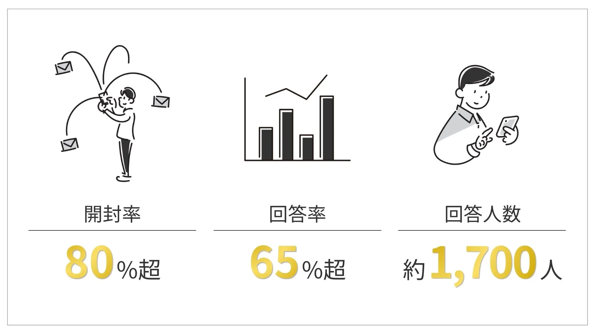

2025/3/13
【乳飲料メーカー】卸売モデルで接点ゼロだった顧客と、LINEでつながる。キャンペーン後アンケートの開封率81.6%・回答率65.8%を実現し、次施策への顧客インサイトを獲得

スーパーなどへの卸売が主体のため、顧客と直接接点を持てず「誰が・なぜ買っているか」がわからない状態が続いていた。
NotreはLINE公式アカウントを活用し、キャンペーン参加者へのアンケート設計・配信・セグメント分析・次施策の導線設計をワンストップで支援。
結果、開封率81.6%・回答率65.8%という高水準の顧客データを取得し、購買傾向・景品ニーズ・ロイヤリティ層の分布など、次のマーケティングに直結するインサイトの獲得に成功した。
目次
クライアント紹介
| 項目 | 内容 |
|---|---|
| 業種 | 乳飲料メーカー（BtoB卸売モデル） |
| 販売チャネル | スーパー等の小売店への卸売が主体 |
| 課題の背景 | 卸売経由のため最終消費者との直接接点がなく、顧客属性・購買行動・ブランド認知経路などのデータをほぼ保有していなかった |
| 依頼のきっかけ | 以前実施したレシートキャンペーンを通じて獲得したLINE友だちリストを、次のマーケティングに活かしたいという相談 |
課題：導入前の状況
「誰が買っているか」が、まったくわからなかった
スーパーや量販店への卸売が主体であるため、商品は店頭に並ぶものの、それを手に取った消費者がどんな人物か、なぜ選んでくれたのか、他のブランドと併用しているのかといった情報は一切手元に届かない。
レシートキャンペーンを通じて数千人超のLINE友だちを獲得したものの、そのリストをただ持っているだけでは意味がない。「このリストをどう活かすか」という戦略と、顧客一人ひとりを理解するための仕組みが必要だった。
また、キャンペーン終了直後というタイミングは、ユーザーが最もブロックしやすい「最大の離脱ポイント」でもある。適切なフォローがなければ、せっかく獲得した友だちリストが急速に失われるリスクもあった。
施策：Notreが提案した解決策
① キャンペーン後アンケートの設計・実装
キャンペーン終了直後のユーザーの熱量が残っているタイミングを逃さず、6設問からなるアンケートをLINE上で配信。
設問は「キャンペーンの認知経路」「応募動機」「景品の魅力度」「次回希望の景品」「普段の購買行動」などで構成し、次の施策設計に直結するデータを効率よく収集できる設計にこだわった。
また、回答インセンティブとしてクーポンを全員にプレゼントする設計を採用。「損したくない」という心理（損失回避）を活用し、回答率を最大化した。
リマインド配信も設計・実施し、未回答者に対して催促感を出さずに再アプローチ。リマインドの開封率は68%を記録した。
② アンケート結果の分析・レポーティング
回収したデータをもとに、設問ごとの回答傾向を詳細に分析。単なる集計にとどまらず、数字の背景にある「ユーザー心理」と「次施策への示唆」をセットで提示した。
例えばQ2（応募動機）では「よく買っているから（62.6%）」が最多であったことから、「既存顧客のリスト化は成功した一方、新規顧客を動かす引力が弱かった」という課題を抽出。次回は既存顧客と新規顧客で別々のアプローチを取る「二段構えの企画」を提案した。
③ セグメント定義とCJM（カスタマージャーニー）設計
キャンペーンへの関与度に基づき、友だちリストを5つのセグメントに分類。
| セグメント | 定義 | ブロックリスク |
|---|---|---|
| A ロイヤル顧客層 | 50pt以上かつ応募完了 | 極低 |
| B 優良顧客層 | 10〜49ptかつ応募完了 | 低 |
| C 一般顧客層 | 1〜9ptかつ応募完了 | 低 |
| D 登録だけ層 | ポイントありだが応募未完了 | 中 |
| E 見込み顧客層 | 友だち追加のみ（0pt） | 高 |
特にブロックリスクが最も高い「E 見込み顧客層」に対しては、「お礼＋小特典」「月1〜2回の頻度宣言」「1タップ投票などの軽い関与設計」といったブロック抑止施策を優先するよう設計。全体への一斉配信ではなく、各セグメントに最適化した配信内容・タイミング・トーンを提案した。
④ 次回キャンペーン（4月）の導線設計提案
4月実施予定のレシートキャンペーンに向け、「LP経由」と「LINE直接遷移」の2つの応募導線を比較検討し、コストと参加率の観点からクライアントに最適な設計を提案。前回のキャンペーンで得た流入データを根拠に意思決定をサポートした。
結果：導入後の変化

定量的な成果
| 指標 | 数値 |
|---|---|
| アンケート開封率 | 81.6% |
| アンケート回答率（開封数比） | 65.8%（最終的に1,670名が回答） |
| リマインド配信 開封率 | 68% |
| リマインド配信 回答率（開封数比） | 25% |
| 取得できた顧客インサイト | 認知経路・応募動機・景品評価・購買行動の全6設問分 |
定性的な成果
「誰がなぜ買っているか」が初めてデータとして可視化され、次の施策を勘に頼らず設計できる状態になった。
景品の人気度データから、外部の豪華景品よりも自社ブランドらしさに寄せた景品設計が有効であることが判明。次回以降の景品選定の指針となった。
認知経路データから広告チャネルごとの費用対効果を整理でき、次回のメディア予算配分に活用できる根拠が得られた。
購買行動データから、指名買い層よりも競合と併用している層が多数を占めることが判明。「並行購買層を囲い込む設計」へのシフトという方針転換につながった。
今後の展望
今回のアンケートで得た顧客データをもとに、5つのセグメントそれぞれに対するLINE配信を順次実施中。ロイヤル顧客層にはブランドへの帰属意識を高めるコンテンツを、見込み顧客層にはブロックを防ぐ軽い関与施策を届けることで、全体のLINE友だちリストの質を底上げしていく。
また、4月のレシートキャンペーンでは新規顧客獲得を主目的とした「初回お試し全額返金キャンペーン」の実施を予定。今回構築した顧客理解の基盤を活かし、キャンペーン→LINE運用→ロイヤリティ醸成という一連の流れを、より洗練させていく段階に入っている。
本事例はクライアントの要望により、社名を匿名で掲載しています。
Pick up